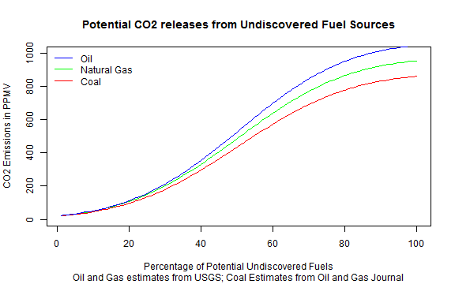
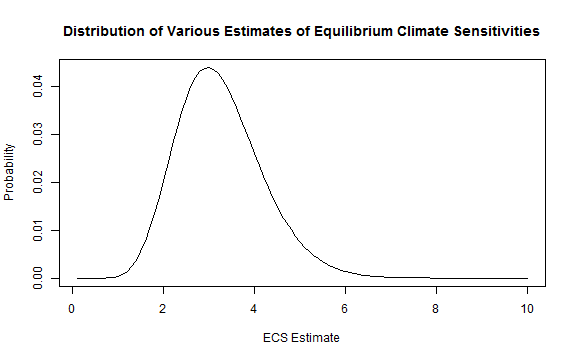

Climate Outcomes
- How much will CO2 emission warm the earth?
\[ \Delta = \{frac}{ECS}{3.7} * 5.35 * ln(\frac{CO2_new}{CO2_old}) \]
- Depends on how much additional CO2 is emitted
- Depends on how sensitive (ECS) the global climate is to CO2
\[ \Delta = \{frac}{ECS}{3.7} * 5.35 * ln(\frac{CO2_new}{CO2_old}) \]

ECS can be modelled as a gamma distribution Derived from Meinhausen 2009 
Using CO2 and ECS estimates to find modelled temperature rises